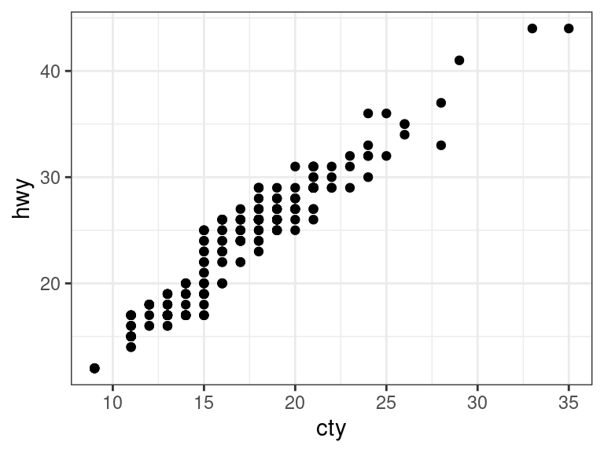

R Graphics with {ggplot2}
David Gerard
2022-12-01
Learning objectives
- Basic plotting in R using the
{ggplot2}package.
Introduction
{ggplot2}is very powerful, so I am just going to show you the most important and basic plots that are necessary for data analysis.Before using the plotting functions from
{ggplot2}in a new R session, always first load the{ggplot2}library.library(ggplot2)In this vignette, we’ll also make some variable transformations, so we will need the
{dplyr}package.library(dplyr)I will use the
mpgdataset to demonstrate plotsdata(mpg, package = "ggplot2") glimpse(mpg)## Rows: 234 ## Columns: 11 ## $ manufacturer <chr> "audi", "audi", "audi", "audi", "audi", "audi", "audi", "… ## $ model <chr> "a4", "a4", "a4", "a4", "a4", "a4", "a4", "a4 quattro", "… ## $ displ <dbl> 1.8, 1.8, 2.0, 2.0, 2.8, 2.8, 3.1, 1.8, 1.8, 2.0, 2.0, 2.… ## $ year <int> 1999, 1999, 2008, 2008, 1999, 1999, 2008, 1999, 1999, 200… ## $ cyl <int> 4, 4, 4, 4, 6, 6, 6, 4, 4, 4, 4, 6, 6, 6, 6, 6, 6, 8, 8, … ## $ trans <chr> "auto(l5)", "manual(m5)", "manual(m6)", "auto(av)", "auto… ## $ drv <chr> "f", "f", "f", "f", "f", "f", "f", "4", "4", "4", "4", "4… ## $ cty <int> 18, 21, 20, 21, 16, 18, 18, 18, 16, 20, 19, 15, 17, 17, 1… ## $ hwy <int> 29, 29, 31, 30, 26, 26, 27, 26, 25, 28, 27, 25, 25, 25, 2… ## $ fl <chr> "p", "p", "p", "p", "p", "p", "p", "p", "p", "p", "p", "p… ## $ class <chr> "compact", "compact", "compact", "compact", "compact", "c…
ggplot()
The first function you use in making a plot is always
ggplot().It takes two main arguments:
data: The data frame that holds the variables you want to plot.mapping: The “aesthetic map”
An “aesthetic map” says what variables go on the \(x\)-axis, what variables go on the \(y\)-axis, what variables are represented by color, or size, or point shape, etc…
You place all aesthetic maps inside an
aes()function.E.g. here, we are mapping
hwyto be on the \(x\)-axis, and different values ofdrvshould be different colors.ggplot(data = mpg, mapping = aes(x = hwy, color = drv))This function just sets the data and the aesthetic mapping, but it won’t produce any useful plot by itself.
You add additional functions to the plot to state the type of plot you want.
One Variable
Continuous
Histogram:
- Variable should be on the \(x\)-axis.
- Use the
geom_histogram()function.
ggplot(data = mpg, mapping = aes(x = hwy)) + geom_histogram()Make the bin lines black and the fill white, and change the number of bins.
ggplot(data = mpg, mapping = aes(x = hwy)) + geom_histogram(bins = 10, color = "black", fill = "white")
Exercise: Load in the estate data (see here for a description) and make a histogram of price with 20 bins. Make the bins red.
Discrete
Barplot:
- Put the variable on the \(x\)-axis.
- Use
geom_bar().
ggplot(data = mpg, mapping = aes(x = drv)) + geom_bar()Exercise: What variables from the
estatedata are appropriately plotted using a bar plot? Plot them.
Two Variables
Continuous X, Continuous Y
Scatterplot:
- Say what variables should be on the \(x\)- and \(y\)-axes.
- Use
geom_point().
ggplot(data = mpg, mapping = aes(x = cty, y = hwy)) + geom_point()
Jitter points to account for overlaying points.
- Use
geom_jitter()instead ofgeom_point().
ggplot(data = mpg, mapping = aes(x = cty, y = hwy)) + geom_jitter()- Use
Add a Loess Smoother by adding
geom_smooth().ggplot(data = mpg, mapping = aes(x = cty, y = hwy)) + geom_point() + geom_smooth(se = FALSE)
Exercise: Using the
estatedata, make a scatterplot of number of bedrooms versus number of bathrooms. Adjust for any overplotting.
Discrete X, Continuous Y
Boxplot
- Place one variable on \(x\)-axis and other on \(y\)-axis.
- Typically, but not always, continuous goes on \(y\)-axis.
- Use
geom_boxplot().
ggplot(data = mpg, mapping = aes(x = class, y = hwy)) + geom_boxplot()Exercise: Using the
estatedata, plot sales price versus style. (hint: you need to first convertstyleto a factor usingas.factor())
Color Coding and Legends
Color code a scatterplot by a categorical variable and add a legend.
- Just add a color mapping.
ggplot(data = mpg, mapping = aes(x = cty, y = hwy, color = drv)) + geom_jitter()Exercise: Using the
estatedata, create a boxplot of price versus ac, color coding by pool.
Changing a legend title
Add a
scale_*()call to change the name:ggplot(data = mpg, mapping = aes(x = cty, y = hwy, color = drv)) + geom_jitter() + scale_color_discrete(name = "New Name1")ggplot(data = mpg, mapping = aes(x = cty, y = hwy, shape = drv)) + geom_jitter() + scale_shape_discrete(name = "New Name2")
Faceting
You can facet by a categorical variable by adding a
facet_grid()orfacet_wrap()function.The variable to the left of the tilde (“
~”) indexes the row facets, the variable to the right of the tilde indexes the column facets. Using a dot (“.”) in place of a variable means that there will only be one row/column facet.ggplot(data = mpg, mapping = aes(x = cty, y = hwy)) + geom_point() + facet_grid(. ~ drv)ggplot(data = mpg, mapping = aes(x = cty, y = hwy)) + geom_point() + facet_grid(drv ~ .)ggplot(data = mpg, mapping = aes(x = cty, y = hwy)) + geom_point() + facet_grid(fl ~ drv)Exercise: Using the
estatedata, plot price versus area, faceting by ac, color coding by pool.
Change Theme
Add a
theme_*()function to change the theme:ggplot(data = mpg, mapping = aes(x = cty, y = hwy)) + geom_point() + theme_classic()